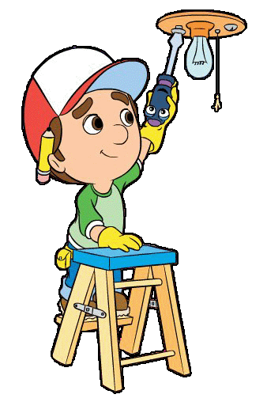

Recuperar

Se relaciona con los procesos industriales y consiste en recuperar materiales o elementos que sirvan como materia prima. Por ejemplo, los plásticos se pueden recuperar mediante el proceso de pirolisis (por calentamiento) o los materiales utilizados en la fabricación de latas, también se puede recuperar elementos que consideremos viejos, cuando no están lo suficientemente viejos o estropeados para recupéralos.